兄弟戰爭
因為父親的再婚，女主角突然擁有十三個兄弟，還與他們同住在一個屋簷下。
隨著劇情的發展，女主角與兄弟們加深了羈絆，甚至逐漸培養出禁斷之戀。
劇情摘要
朝日奈繪麻是一個普通的女高中生，她的父親與愛人再婚，因為繼母擁有十三個兒子，
所以朝日奈繪麻突然成為家中唯一的女兒。因父親與繼母在外工作繁忙，而與兄弟一同住在私家公寓，展開一段一女與十三男的交流。
登場人物
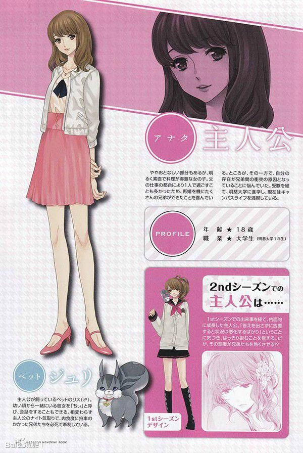
日向繪麻（朝日奈繪麻）
就讀於東京飯田橋「國立陽出高中」的16歲女孩，現就讀於明慈大學的商學部。
自小沒有母親，又由於父親大多外出冒險，經常一個人生活，很渴望家人的愛。
由於父親的再婚，入住朝日奈家公寓「Sunrise Residence」，並自舊姓「日向」改從繼母姓「朝日奈」。
性格乖巧，擅長料理。在朝日奈家中和右京共事家務。意外地熱衷於恐怖射擊遊戲。
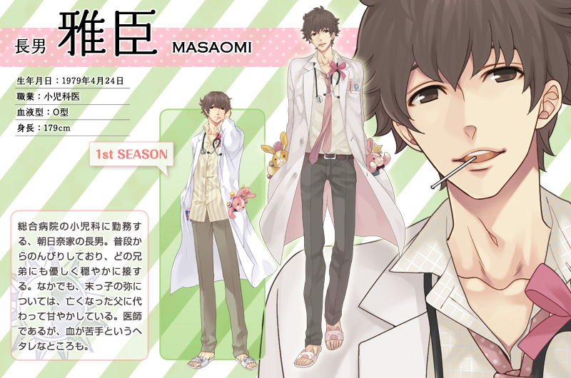
朝日奈雅臣
朝日奈家長男。褐色短捲髮。待人親切。
性格溫柔喜歡小孩子，是個口碑很好的醫生。經常為小兒科病患準備糖果、貼紙與兔子玩偶讓他們開心。
雖然是個醫生卻怕見血，有著天然呆的一面。
對老么彌寵愛有加。
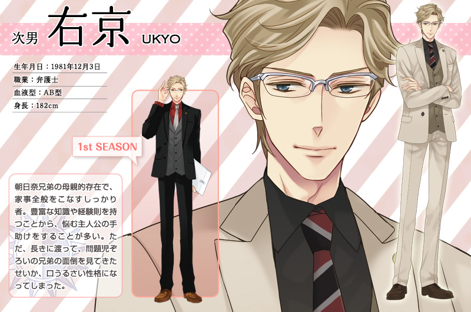
朝日奈右京
朝日奈家次男。金髮碧眼，戴細框眼鏡，走英倫紳士風格。
擅長料理，在家中擔任媽媽的角色。對於大家把焦點都轉向日向繪麻感到有些失落。
一邊當律師同時操持家事又擔心著弟弟們的學習。性格認真有著死心眼的一面。
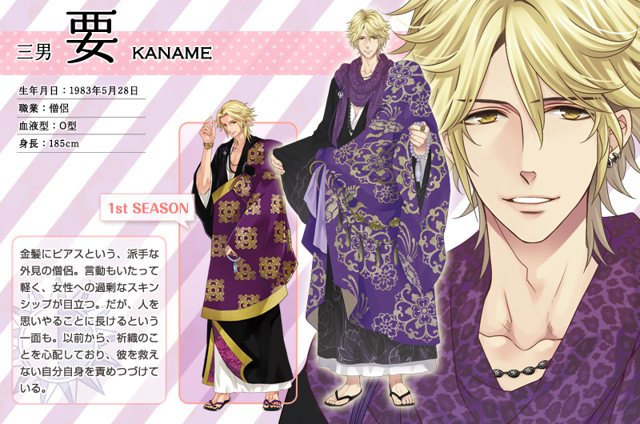
朝日奈要
朝日奈家三男。金髮。是兄弟們之中最受歡迎的一個。
同時兼差男公關的破天荒和尚，在俱樂部「Club Buddha」以"要仁"的花名活躍。
喜歡拈花惹草，擅長察言觀色。總是喜歡調戲日向繪麻，卻也疼愛著她。
在小說23話為了修行暫時離開了家中，2nd之後於29話重新登場。
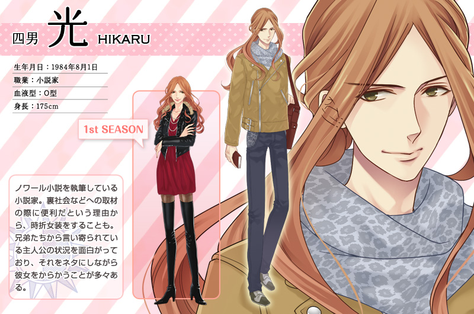
朝日奈光
朝日奈家四男。栗色長髮，外表如同女人，喜愛女裝。在小說11話中登場。
職業是暗黑小說家，筆名「朝川光流」。為了進一步的了解犯人的心理，現時前往義大利潛入黑手黨。
女裝是為了更好接近男性犯罪者才穿上的。
不習慣冷氣房。
觀察力和洞悉能力都很敏銳。
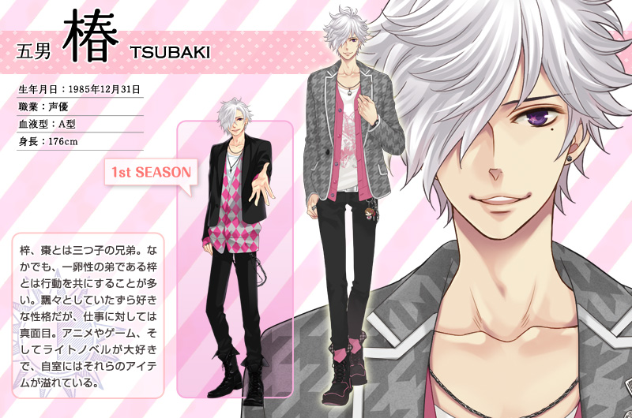
朝日奈椿
朝日奈家五男，銀白色頭髮遮住右眼。其左眼下方有顆淚痣。
職業聲優，本身是動漫畫與遊戲的"御宅族"，因為嚮往喜歡的機器人動畫，高中畢業就進入聲優公司受訓。
非常喜歡梓，常常和他形影不離。
是個「妹控」，因為家中都是兄弟所以一直很希望有一個妹妹。
性格灑脫喜歡惡作劇，經常和要戲弄比較純情的昴和侑介。
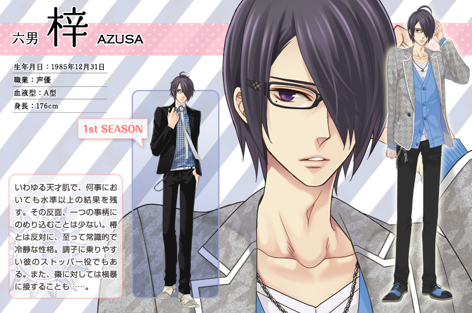
朝日奈梓
朝日奈家六男。和五男椿是同卵雙生。黑色頭髮遮住左眼，戴黑框眼鏡。其右眼下方有顆淚痣。
在兄弟中跟椿關係最好，大學畢業後也追隨椿當起聲優，但業界評價中實力在椿之上（尤其指演技方面）。
富有常識性格冷靜，是容易激動的椿的煞車器，但反而很少考慮自己的事。
雖是凡事都能夠輕鬆應對的天才型，但是對任何事情都不能做得長久。
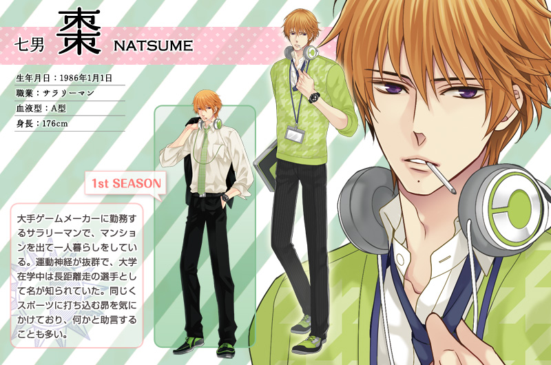
朝日奈棗
朝日奈家七男。橙金色短髮。和椿跟梓是同胎但異卵生的三胞胎末子。嘴唇下方有顆痣。
搬出家裡到遊戲公司上班，因為椿刻意隱瞞，因此直到母親再婚當天才認識妹妹日向繪麻。對於小千時常展現身為哥哥關心的一面。
學生時代是體育特優生但因故退出體壇，因此十分關注昴的籃球進展。
重度路癡。
非常喜愛貓，在自家公寓有飼養兩隻貓「椿」和「梓」。
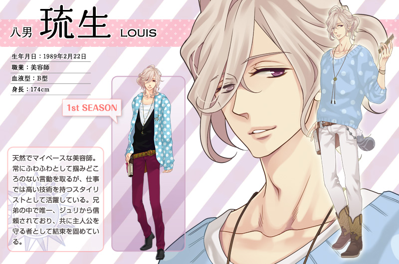
朝日奈琉生
朝日奈家八男。米白色半長捲髮。獨樹一格的人氣美容師。時常發呆，不知道他在想些什麼。是法國混血。
是除了繪麻以外，唯一可以和朱利對話的人。和朱利約定會保護繪麻。成立「小千保護協會」。
實為兩歲時被美和從孤兒院帶回的養子，包括昴在內之後出生的弟弟們都對此不知情。
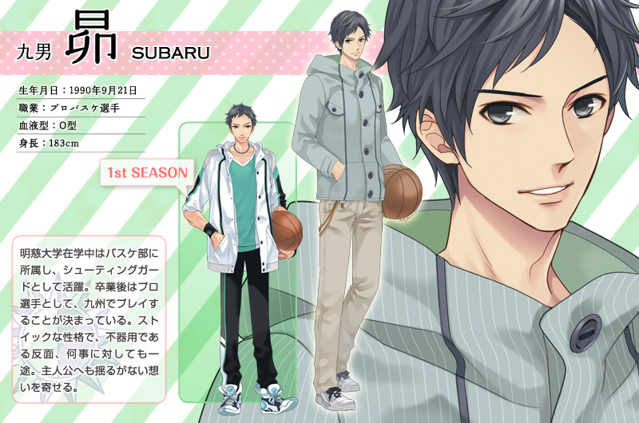
朝日奈昂
朝日奈家九男。黑灰色短髮。
就讀於私立明慈大學，是體育推薦入學的特優生，籃球部部員。
性格直爽但純情，對女生完全沒有免疫力，在繪麻面前容易感到害羞，但也因此採取曖昧逃避的態度。
後獲得九州職業籃球隊的邀請，在聽了日向繪麻的話後考慮加入。
幼年很黏棗
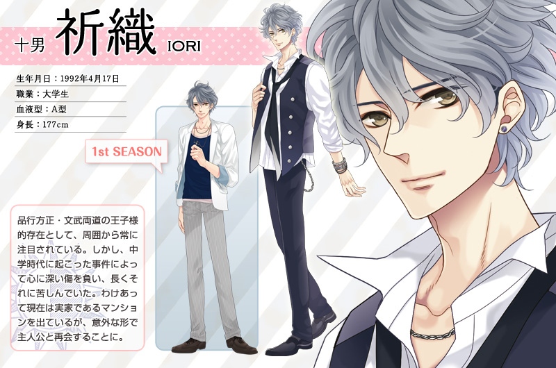
朝日奈祈織
朝日奈家十男。灰色捲髮，頭頂有根呆毛。在私立名門教會學校「布萊特聖多麗亞學院」上學。
是被附近幾所學校的女生所熟知的文武雙全的美男子。
在女生裡有著很高的人氣，為人很紳士，對日向繪麻非常親切。
特別愛護庭園的花，也時常會送花給日向繪麻。
在2nd中拒絕了國立大學入學申請，進入私立城智大學就讀。
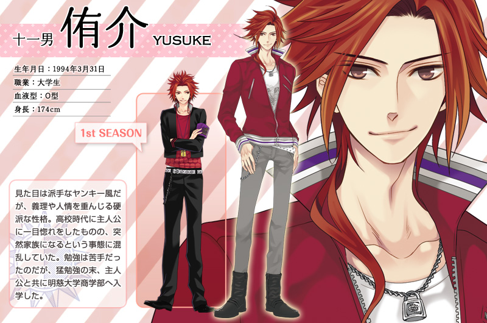
朝日奈侑介
朝日奈家十一男。紅色頭髮，脖子旁繫著兩條小辮子。和日向繪麻是同班同學。
一年級時就對當初不同班的日向繪麻一見鍾情，也因為日向繪麻成為家人感到很混亂。
雖然外表招搖但是性格硬朗，很有正義感。
成績很糟，但2nd中高中畢業仍努力和繪麻一同考上了私立明慈大學的商學部。
在2nd中已成為小千保護協會的其中一員。
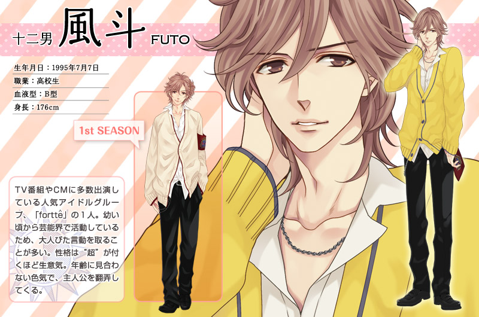
朝日奈風斗
朝日奈家十二男。栗色捲髮，配上黃色髮夾。
中學三年級（2nd中升學入陽出高中），是人氣偶像團體「fortte」成員。藝名「朝倉風斗」。
因為從小在演藝圈里活躍的關係，個性很成熟獨立。
和外表不符的超級毒舌和惡劣，經常調戲小千。
梓認為他在歌唱方面還不夠專精，目前志向於戲劇演出。
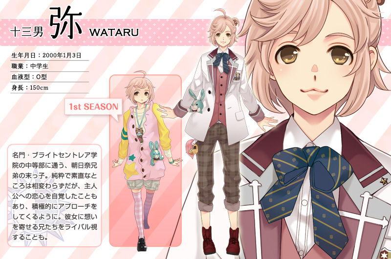
朝日奈彌
朝日奈家十三男。粉色短髮,外表十分可愛。
「朝日奈家的良心」，天真無邪的小學生。由於是家中最小的孩子，是個愛撒嬌的愛哭鬼。
十分喜愛姊姊日向繪麻與長男雅臣，最重要的寶物是雅臣親手製的初代青色兔子布偶。
2nd裡小學畢業後升入了名門·布萊特聖多麗亞學院學院初中部。
成績很好，念書運動都喜歡，唯一不會游泳。
朱利
日向繪麻的雄性寵物松鼠，脖子上有個大大的蝴蝶結。
目前只有繪麻跟琉生能和他溝通。稱呼繪麻「小千」。
從日向繪麻出生就常相左右。十分擔心繪麻進入朝日奈家會被眾多的兄弟性騷擾，誓死要保護繪麻。
心得感想
當初會看這一部動畫，是因為網頁上的同人遊戲。
而那時大概是國中一年級，對於情感非常好奇的時候。
這部動畫給我非常不一樣的感覺，每次看這部動畫我都小鹿亂撞(*´艸`*)。